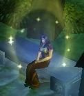

Guildes
Nature Rédemptrice (la)
Clothilde
Age : 22Sexe : Femme
Race : Humain
Faction : Alliance
Formation : Voleur
Description : Clothilde est une jeune fille un peu naïve, maladroite et trop protégée par sa soeur Edonne. Elle évite d'ailleurs de la croiser le plus possible. Depuis qu'un esprit furbolg s'est lié à elle, elle affectionne ces êtres et à décider de se placer sous la tutelle de la Nature Rédemptrice. Ne vous fiez pas à ses airs d'ignorante, elle sait se défendre s'il le faut, et répondre aux aggressions.
Plus d'infos sur Clothilde >>>
Lire les 9 récits de Clothilde >>>
Daenn
 Age : Inconnu
Age : Inconnu
Sexe : Femme
Race : Humain
Faction : Alliance
Formation : Voleur
Plus d'infos sur Daenn >>>
Lire les 3 récits de Daenn >>>
Edonne
Age : 25Sexe : Femme
Race : Humain
Faction : Alliance
Formation : Paladin
Description : Fi des voies de la Lumière ! Edonne a cessé de s'y fourvoyer, n'y voyant qu'une impasse. Elle est déterminée à apprendre toujours plus, notamment au contact de la sagesse elfique. Ses différentes rencontres lui ont permis d'accéder à des pouvoirs étranges : apaiser la colère, guérir le mal avec une concentration extrême. Edonne peut lire vos sentiments en vous comme dans un livre. Edonne, un charme froid.
Plus d'infos sur Edonne >>>
Lire les 2 récits de Edonne >>>
La souris
 Age : 20
Age : 20
Sexe : Femme
Race : Humain
Faction : Alliance
Formation : Voleur
Description : C'est comme une musique assourdissante. Les grosses gouttes de pluie sur le bois des pontons et des toits tambourinent et forcent l'entrée de son sommeil.
La jeune femme s'assoit dans le lit. Il ne fait pas encore tout à fait jour dehors. Obscurcit par les lourds nuages noirs de l'orage, le ciel garde encore un peu sa couverture sombre.
Elle repousse le drap et étire son corps moite et brun. Sur la peau mate de ses épaules retombent ses cheveux longs, pas très bien coupés. Ils ont la couleur rose-orangée du coucher de soleil sur les blés.
Elle attrape une chemise trop large pour elle et qui ne sent pas son odeur. Enfouissant son nez dedans, aspirant, et goutant à délice les éfluves restantes de son amant, ne depasse du tissu blanc que son regard violet qui rêvasse. Elle s'en revêt et avance jusqu'à la porte.
Jambes nues, appuyée contre le chambranle, l'orageuse pluie vient lui lecher ses pieds sales et habitués a marcher sans chaussures.
Son sourire éclaire son visage bronzé, constellé de taches de rousseur.
La violine de son regard guette le retour du reste de son âme, de beaucoup de sa vie, son loup, son fiancé...
A portée de mains, toujours, deux dagues sans apparat.
Des vêtements de cuir pas très bien entretenus attendent sur un coin du parquet.
Dans ces affaires, toute sa vie. Toutes ses aventures...
Plus d'infos sur La souris >>>
Lire les 10 récits de La souris >>>
Mahelle
 Age : 17
Age : 17
Sexe : Femme
Race : Humain
Faction : Alliance
Formation : Guerrier
Plus d'infos sur Mahelle >>>
Nëalys
Age : 237Sexe : Femme
Race : Elfe
Faction : Alliance
Formation : Guerrier
Plus d'infos sur Nëalys >>>